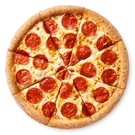
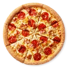
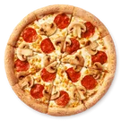
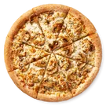
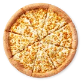

MENU
-

Пепперони
Итальянские колбаски пепперони, сыр Моцарелла, томатный соус.
(Подается одним куском)
-

Эрондондон
Колбаски пепперони, бекон, орегано, Сыр моцарелла, томатный соус
(Подается одним куском)
- 
-

Грибная
Грибной соус, двойная порция шампиньонов, сыр Моцарелла, базилик
(Подается одним куском)
-

Сырная
Сырный соус, увеличенная порция сыра Моцарелла и орегано
(Подается одним куском)
Наши блюда:
-
- Чистейший байкальский напиток
-
- Добрая пародия
-
- Для тех, кто за рулем